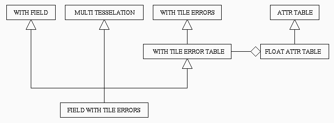

Examples: functions that return the approximation error of a tile, the area of a tile.
Such interface will be contained in an abstract class, that we call WithYYYClass, where YYY is the name of the feature. All specialized MTs with feature YYY will be subclasses of MT_MultiTesselationClass and of WithYYYClass.
Examples: the approximation error of a tile is stored explicitly, the area of a tile is computed on-line.
Example: the approximation errors of tiles are stored in a float attribute table (class MT_FloatTableClass).
This will give a subclass of WithYYYClass, that we call WithYYYTableClass. All specialized MTs with feature YYY stored in an attribute table will be subclasses of MT_MultiTesselationClass and (indirectly, by the way of class WithYYYTableClass) of WithYYYClass.
Example: implement the function that computes and returns the area of a tile.
 We define the abstract interface for both tile errors and vertex fields, called WithTileErrorClass and WithFieldClass, respectively:
typedef class WithTileErrorClass * WithTileError;
class WithTileErrorClass
{
public:
/* Return the error associated with a tile t. */
virtual float TileError(MT_INDEX t) = 0;
};
typedef class WithFieldClass * WithField;
class WithFieldClass
{
public:
/* Return the field value at a vertex v. */
virtual float VertexField(MT_INDEX v) = 0;
};
For tile errors only, we define a class that implements the abstract interface by storing error values into a float attribute table. Such class, called WithTileErrorTableClass, contains a pointer to an object of class MT_FloatTableClass. It also implements other functions related to reading and writing tile errors; such functions are implemented by means of the internal float attribute table.
class WithTileErrorTableClass : public WithTileErrorClass
{
protected:
/* Auxiliary attribute table used to store tile errors. */
MT_FloatTable my_error;
public:
/* Creator and destructor. */
WithTileErrorTableClass(void)
{ my_error = new MT_FloatTableClass(); }
~WithTileErrorTableClass(void)
{ if (my_error) delete my_error; my_error = NULL; }
/* Function redefined from superclass WithTileErrorClass. */
float TileError(MT_INDEX t) { return my_error->MT_AttrValue(t); }
/* Read / write the tile errors. */
int ReadTileErrors(FILE * fd) { return ( my_error->MT_Read(fd) ); }
void WriteTileErrors(FILE * fd, int file_encoding = MT_ASCII_ENCODING)
{ my_error->MT_Write(fd, file_encoding); }
/* Set and return the textual description used in the tile error file.
String s is at most MT_DESCR_LEN characters. */
void SetTileErrorDescription(char * s)
{ my_error->MT_SetDescription(s); }
void TheTileErrorDescription(char * s)
{ my_error->MT_TheDescription(s); }
protected:
MT_FloatTable TheTileErrorTable(void) { return my_error; }
friend class TileErrorBuildingInterfaceClass;
};
We define the class for our MT with tile errors and vertex fields.
This is a subclass of MT_MultiTesselationClass, of
WithTileErrorTableClass, and of WithVertexFieldClass.
The function for accessing the vertex field is implemented directly here.
typedef class FieldWithErrorClass * FieldWithError;
class FieldWithErrorClass : public MT_MultiTesselationClass,
public WithTileErrorTableClass,
public WithFieldClass
{
public:
/* Return the field value for a vertex v. We assume that the MT
is given in the space containing the graph of the field,
thus the field value is the last coordinate of each vertex. */
float Field(MT_INDEX v) { return MT_VertexCoord(v, MT_VertexDim()-1); }
/* Constructor. */
FieldWithErrorClass(int vert_dim, int tile_dim)
: MT_MultiTesselationClass(vert_dim, tile_dim),
WithTileErrorTableClass()
{ }
};
An MT of class FieldWithErrorClass
will be read from two different
files, one containing the MT, and the other one containing the
tile errors, by using
function MT_Read of class
MT_MultiTesselationClass, and
function ReadTileErrors of class
WithTileErrorTableClass,
respectively.
A similar remark holds for writing.
An MT of class FieldWithErrorClass will allow the use of extraction conditions that refer to functions TileError and Field in their evaluation.